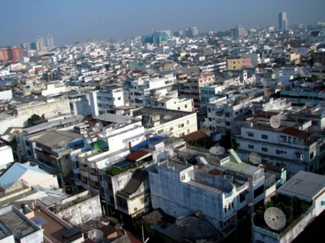

North Sumatra
Medan
The booming city of Medan, capital of North Sumatra, is an economic hub and commercial centre for the region. This is the largest city in Sumatra attracting residents from all over Indonesia who come here to do business. For visitors, Medan is best known as the gateway to North Sumatra with many travellers flying into the city and setting off from here for adventures in the cool highlands of Lake Toba or the wild Sumatran jungle. This is a busy and sprawling metropolis so you’ll need to be patient as noisy minibuses and becak compete with taxis and motorbikes for space through the crowds and heat. The population of Medan is diverse. Citizens here represent virtually every ethnicity in Indonesia including Batak, Malay, Javanese, Minang, Acehnese, Indians and Chinese. In it’s earliest days, the area which is now Medan was home to a community of traders and seafarers, under the rule of Islamic Malay leaders. This was until the Acehnese finally conquered the area after years of battling in the early 17th century. During the period of conflict, the plains were used as a battlefield between the two kingdoms which is why Medan translates literally as field or battlefield. After independence in 1948, the population of Medan exploded and it is now the third largest city in the country. Today the influence of Medan’s colonial plantation past is reflected in the European architecture of many of the cities biggest buildings. Medan has become a blend of the modern and the ancient.
Toba Lake & Samosir Island
Lake Toba is one of the awesome natural wonders of the world. This is a crater lake so enormous it has an island almost the size of Singapore in its centre. At over 1,145 square kilometers, and a depth of 450 meters, Lake Toba is actually more like an ocean. This is the largest lake in Southeast Asia and one of the deepest lakes in the world. Toba is a place to come and sit back, relax and absorb some beautiful pristine scenery. As you sit and take in the view of the picturesque mountains set against the cool clear lake, you will feel the worries of the world melt away. As the lake sits 900 meters above sea level there is a cooler climate here making a refreshing break from the heat, humidity and pollution of the city. It’s hard to imagine a more scenic place to come and enjoy hiking, swimming and sailing although once you arrive it might be difficult to resist the anesthetizing effects of the lake. The cool clear water coupled with the relaxed atmosphere and friendly people is what draws visitors from all over the world to Toba. Venture onto the island of Samosir in the middle of the lake and you will discover mountains steeped in cool mist, clear waterfalls to swim under and locals taking their water buffalo out in the fields. This is a place to come and enjoy the legendary Batak hospitality. Say cheers and enjoy some traditional palm wine with the locals. Sit and have coffee and chat with islanders keen to practice their English. Where-ever you go, it won't take long to make a new friend. The island of Samosir, situated in the huge crater lake of Toba, measures 45 km. by 20 km. The island, together with its surrounding areas is the heart of the Toba Batak culture. A visit to Lake Toba is not complete without a stay on Samosir with its many traditional villages along its shoreline. Lake Toba is around 5 hours’ drive from North Sumatra’s capital city, Medan. On the east side of the island, the land rises steeply from a narrow strip of flat land along the lake’s water edge climbing to a central plateau that towers some 780 m. above the waters. Cycling up to the plateau passing many traditional villages is a pleasant experience, as from this height one can have a wonderful panoramic view on this magnificent blue lake.
Berastagi
Berastagi iis 70 kms from Medan on the way to Lake Toba, situated at an altitude of 1300m, the town has a cool climate, ranging between 17 to 20 degrees Centigrade, making a refreshing break from the heat of the city. Days are extremely pleasant while nights can be quite cool. The town developed in the 1920’s as Dutch hill station and today has become a popular weekend destination for Medan residents. The landscape here is dominated by distant views of the smoking volcanoes Mt. Sinabung and Mt.Sibayak. On the western edge of the town, Gunaling Hill rises above the surrounding plateau to provide some spectacular views of these two towering volcanoes. Berastagi is famous for its flowers, vegetables and fruits and its markets constantly hum with activity. The most famous produce probably Marquisa or passion fruit. Sweet oranges are another delicious specialty. Berastagi's produce also exported to Singapore and Malaysia are: cabbage, carrots, tomatoes, potatoes, red chili, and eggplant. The local markets swarm with people doing business and selling their wares. Here you will see scenes from traditional Karo life as well as everything from jungle miracle cures and second hand shoes on sale.
Teluk Dalam
This lovely little city is an amazing blend of beautiful scenery, culture, and history. Teluk Dalam in South Nias, is a prime destination for surfers both local and international, with its challenging sites and fierce rolling blue waves. This city is also the spot where the famous traditional ‘stone, or boulder jumping’ takes place, a heart-stopping sport requiring great acrobatic skills and athletic ability. Teluk Dalam is the capital city of the South Nias regency in North Sumatra, aside from also being a district of its own. Among the locals of Southern Nias, Teluk Dalam is referred to in the local dialect as Luahaziwara-wara, which translates to “the meeting place.” If you look on the map it is easy to locate Teluk Dalam as it lies directly on the southern tip of Pulau Nias, bordering the Amandraya district and the Lahusa District. The majority of the population in this quaint little city is Christian and the rest, Muslim. Most of the residents make their livelihoods here as farmers of the many natural resources such as rice, coconut, rubber, cocoa and fruits as the main crops. Others work as fishermen and being so close to the ocean it is a relatively prosperous occupation. The main catches around this bay are fish, shrimp and crab.